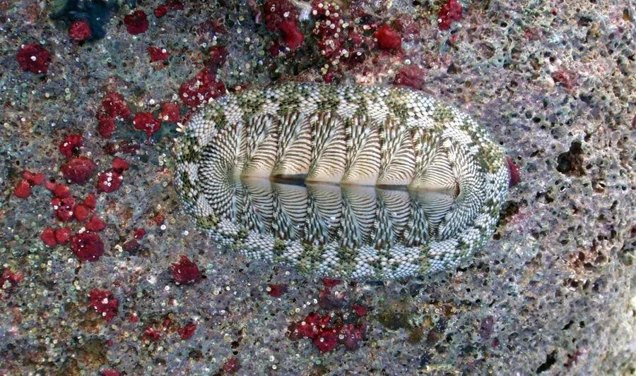

软体动物 · 动物界
线纹石鳖 Chiton tuberculatus

壳板上布满颗粒和线纹的大型石鳖，生活在加勒比海岩礁上，吸附力极强，是潮间带常见的植食性贝类。
- 分类
- 门软体动物门纲多板纲目石鳖目科石鳖科属石鳖属
- 栖息环境
- 岩礁海岸的潮间带和浅水礁盘，浪击强烈的岩石表面
- 地理分布
- 西大西洋热带海域，包括加勒比海、巴哈马、佛罗里达南部和南美洲北岸
- 保护级别
- 尚无专门评估；为潮间带常见大型石鳖
物种志
线纹石鳖的身体呈椭圆形，长约六至十厘米，背面由八块交叠的壳板组成，壳板呈灰绿至暗褐色，表面布满颗粒状的突起和细密的线纹，壳板周围的环带上生有短而硬的鳞片和棘刺。腹面是宽大的足部，吸附力极强，能牢牢贴在岩石上。头部没有眼和触角，口内有齿舌，齿上覆盖着磁铁矿，能刮食岩石表面的藻类。它受惊时会把身体卷成球状。
它分布于西大西洋的热带海域，包括加勒比海、巴哈马、佛罗里达南部和南美洲北岸，栖息在岩礁海岸的潮间带和浅水礁盘，喜欢浪击强烈、藻类繁茂的岩石表面。它昼伏夜出，白天吸附在石缝和砾石下，夜间爬出来刮食藻类。繁殖期在春夏，雌雄异体，受精卵在海水中发育，幼虫经浮游阶段后附着到礁石上。它个体较大，肉可食用，也是潮间带常见的大型石鳖，目前尚无专门的保护评估。
形态与习性
- 食性刮食岩石表面的藻类
- 体长约六至十厘米，为较大的石鳖
- 壳板八块交叠，表面有颗粒和线纹
- 防御吸附力极强，受惊时卷成球状
- 栖息环境潮间带和浅水礁盘的岩石表面
- 分布加勒比海、巴哈马和佛罗里达南部
趣味知识
- 线纹石鳖壳板上的颗粒和线纹像细密的浮雕，是它得名的原因。
- 它吸在岩石上时很难被拽下来，除非趁它爬动时突然掀开。
- 加勒比海退潮后，常能在礁石缝里看到它半露的八块壳板。